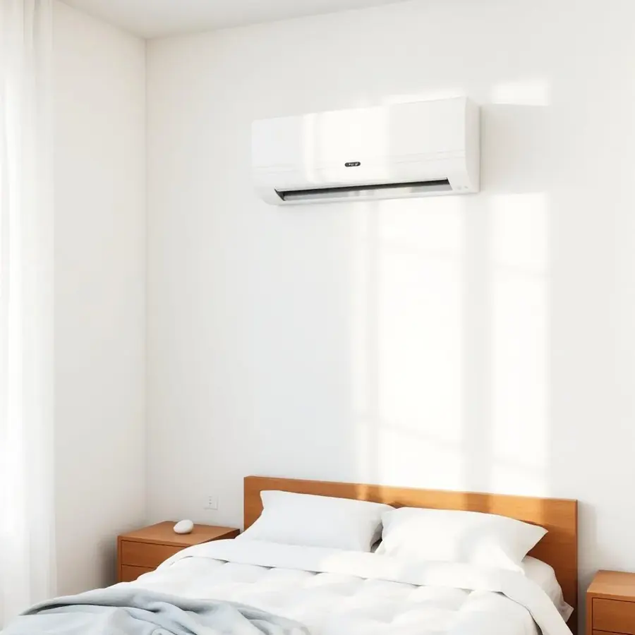
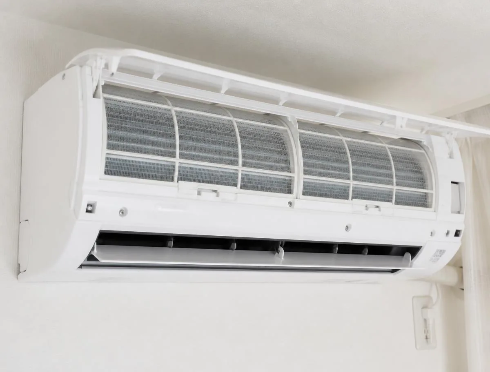
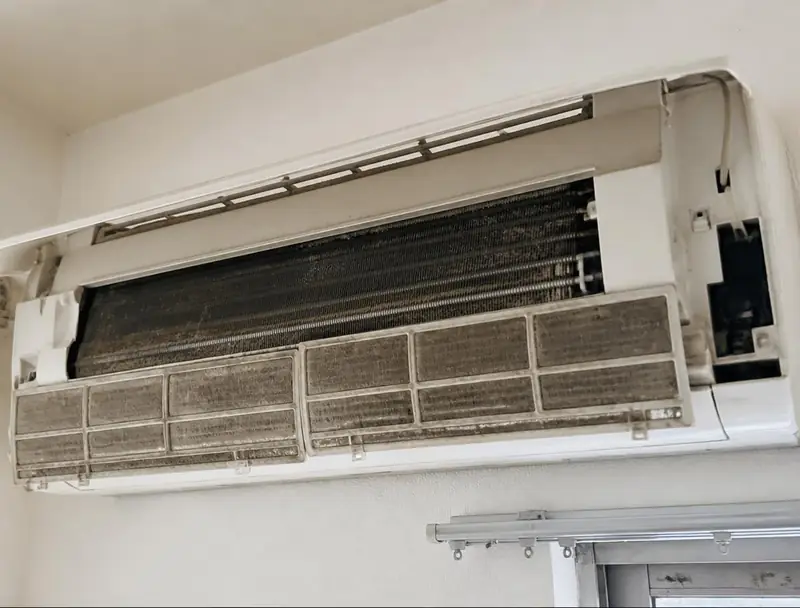
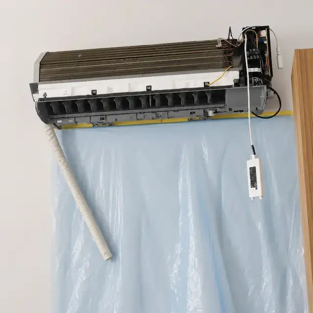
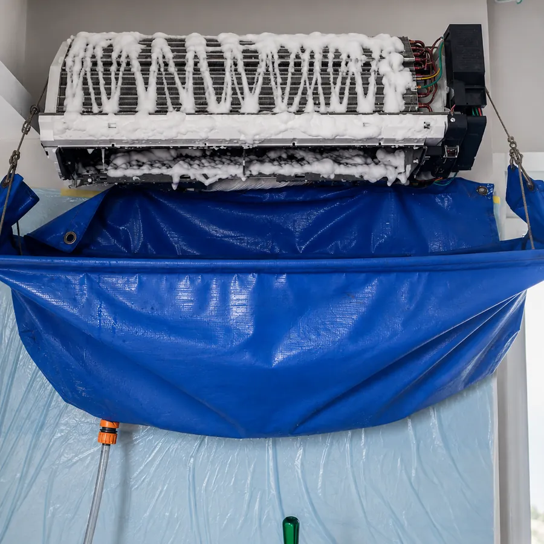
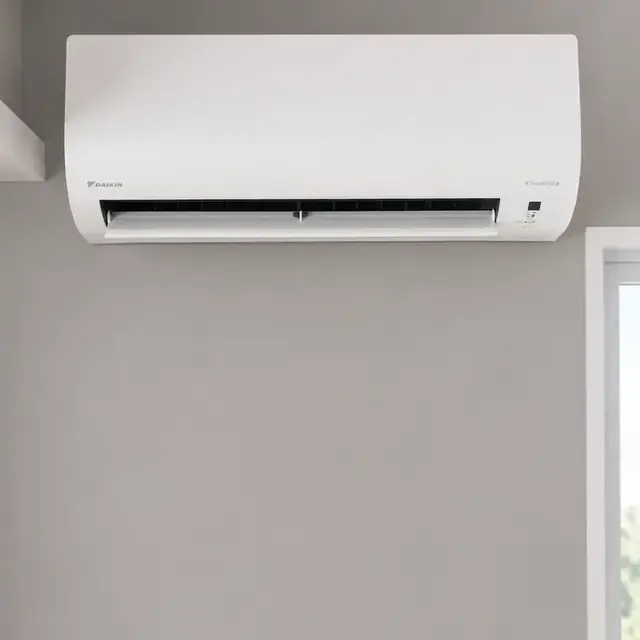

Seu ar-condicionado está com mau cheiro, acumulando sujeira ou não está funcionando como antes? A Art-Climatização cuida da limpeza do seu aparelho com atendimento ágil em Alagoas.

A sujeira acumulada nem sempre fica visível por fora. Veja o resultado de uma limpeza.


Arraste a divisória para comparar.
Aquele cheiro estranho ao ligar o aparelho.
Poeira presa nos filtros e nas partes internas.
Manchas e marcas visíveis nas grades e na carcaça.
O ar do cômodo já não parece o mesmo.
O aparelho não está funcionando como antes.
Faz tempo desde a última higienização.
A limpeza ajuda a remover a sujeira acumulada nas partes internas, contribui para um ambiente mais agradável e faz parte dos cuidados com o equipamento.
Remover a sujeira acumulada ajuda a deixar o ar do ambiente mais agradável e livre de odores.
A limpeza faz parte dos cuidados básicos que ajudam a prolongar a vida útil do aparelho.
Um aparelho limpo trabalha em condições mais adequadas de refrigeração.
Sujeira acumulada faz o aparelho trabalhar mais, aumentando o gasto de energia.
A Art-Climatização trabalha com atendimento ágil em Alagoas para limpeza de ar-condicionado residencial. Fale conosco e verifique a disponibilidade para o seu caso.
Conta o que está acontecendo com o seu aparelho.
Conversamos sobre o tipo de aparelho e a situação.
Alinhamos o melhor momento para a visita.
Fazemos a limpeza e higienização do seu ar-condicionado.
Registros reais de atendimentos: antes, durante e depois da higienização.



Avaliações reais de clientes no Google — nota máxima em todos os serviços.
Alan Matias
“Profissional competente e muito bem organizado, pontual e cobra o preço justo.”
Alexsandro Caetano
“Ótimo profissional muito educado e resolveu rapidamente meu problema.”
Raul Matcki
“Excelente serviço! Atendimento rápido, caprichoso e muito profissional. Recomendo demais!”
Kadu
“Profissional de respeito, e bastante educado, e com um serviço muito bem feito.”
Guilherme Toledo
“Excelente profissional, muito caprichoso e responsável. Recomendo o trabalho da Art Climatização!”
Fale com a Art-Climatização pelo WhatsApp: entendemos a sua necessidade e cuidamos da limpeza do seu aparelho com atendimento ágil.